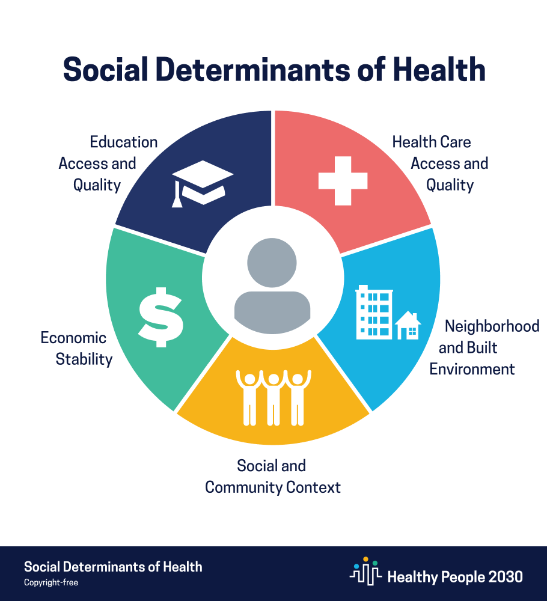

Social Determinants of Health Across Maryland
Megan Chien, Gwenyth Portillo Wightman, Karine Song
Introduction
As students attending school in Baltimore, a number of us have heard of the Black Butterfly effect. It is the phenomenon where the majority of Baltimore’s Black population is “spread out on both sides of the coveted strip of real estate running down the center of the city like a butterfly’s wings” [1]. Some scholars are even coining the phenomenon as an “America Apartheid” in reference to South Africa’s system of segregation that defined their legislation for over 50 years. The spatial racism in Baltimore binds oppression to geography. In the 1930s, investors began redlining predominantly Black neighborhoods to mark them as the riskiest financial investments. This lead to a vicious cycle of disinvestment and disparity in Black communities. With devalued home values (a pricing difference as much as $48,000) and unequal access to credit to develop, repair, or renovate buildings, Black communities continue to suffer from a worsening racial wealth gap [2]. The Black Butterfly has public health implications as well. Dilapidated buildings across the city experience problems with blight as well as lead paint. Although Baltimore was the first city in the United States to ban lead paint, the toxic paint and dust still linger in the air and are particularly potent when a row of townhomes is knocked down. Lead paint has been linked to learning disabilities, developmental delays, ADHD, high blood pressure, and even death [2].
The Black Butterfly in Baltimore inspired us to examine the effects of spatial racism on a larger scale. We decided to expand to the entirety of Maryland and examine differences between its counties. In order to more accurately compare and contrast the racial segregation, we chose to focus our analysis on the social determinants of health (SDOH). These are the “conditions in the environments where people are born, live, learn, work, play, worship, and age that affect a wide range of health, functioning and quality-of-life outcomes and risks” [3]. There are five categories of SDOHs:
1. Neighborhood and Built Environment
2. Economic Stability
3. Social and Community Context
4. Education Access and Quality
5. Healthcare Access and Quality
We will begin our analysis with an overview of the Maryland health outcomes on the basis of life expectancy and mental health outcomes. Then, we will analyze each category of SDOH by examining a corresponding factor:
1. Neighborhood and Built Environment → Air Quality & Access to Physical Activity
2. Economic Stability → Severe Housing Cost Burden
3. Education Access and Quality → Average Standardized Test Scores
4. Social and Community Context → Grocery Store Access
5. Healthcare Access and Quality → Health Insurance and Access to Providers
Health Outcomes in Maryland
To examine social determinants of health across Maryland, we chose two measures as health outcomes: life expectancy and mental health.
Life Expectancy
Background
Life expectancy measures the average number of years a person can expect to live [4].
Average Life Expectancy
Analysis
We can clearly see that the average life expectancy for Black residents is consistently lower than the average life expectancy of white residents. By examining the social determinants of health below, we will be able to further analyze the life expectancy data.
Mental Health
Background
Our mental health data comes from the Behavioral Risk Factor Surveillance System survey. To estimate mental health, survey respondents were asked, "Thinking about your mental health, which includes stress, depression, and problems with emotions, for how many days during the past 30 days was your mental health not good?" Individuals who responded 14 or more days per month are considered to have frequent mental distress [4].
% Frequent Mental Distress
Analysis
These two measures of mental health appear to be highly correlated, since darker colored counties tend to have darker colors on both maps. By considering the social determinants of health below, we hope to gain insight into which social determinants of health are associated with mental health outcomes.
Social Determinants of Health in Maryland
1. Neighborhood and Built Environment:
Air Quality and Access to Physical Activity
Background
Both air quality and access to physical activity are social determinants of health in the “Neighborhood and Built Environment” category.
The Air Quality Index (AQI) is a measure developed by the Environmental Protection Agency to represent the amount of common ambient air pollutants present in the air at a given time. It uses a normalized scale from 0 to 500, with higher AQI values indicating a higher level of pollution. AQI values under 100 are considered to be satisfactory [5].
Access to physical activity is defined as residing in a census block that is within a half mile of a park, in an urban census block that is within one mile of a recreational facility, or in a rural census block that is within three miles of a recreational facility [6].
Median Air Quality Index
Analysis
The Median Air Quality Index map shows that all counties have a median air quality index of 46 or less, which meets the EPA’s requirements for satisfactory air quality. The county with the best air quality index is Howard, which has a median AQI of 28, while the county with the worst median AQI is Allegany, with a median AQI of 46. Howard has an average life expectancy of 79 years, while Allegany’s average life expectancy is 76 years.
Life expectancy is impacted by many factors including air quality. Researchers have shown that long-term human exposure to particulate pollution reduces life expectancy by nearly two years [7]. While lower air quality is likely not the only cause of Allegany’s lower life expectancy relative to Howard’s, greater amounts of pollution could be one contributing factor to why Allegany’s residents have a lower life expectancy.
Air quality would be an important factor to keep in mind when it comes to promoting better health across Maryland because residents have little power to protect themselves from the air they breathe. In order to ensure equitable health outcomes, policymakers should consider how air pollution affects citizens and how policies limiting air pollution could benefit citizens’ health [7].
According to researchers, people with greater access to opportunities for exercise should have better health outcomes. Individuals who have access to physical activity opportunities are typically healthier and have a greater life expectancy and lower prevalence of conditions like obesity and hypertension [8]. People who live within a shorter distance to parks, gyms, and other exercise opportunities are more likely to engage in physical activity [9].
Interestingly, the counties with the greatest access to physical activity do not both have high average life expectancies. Montgomery, where 100% of residents have access to physical activity, has the highest life expectancy in the state, which follows what we would expect based on the research above: areas with greater access to physical activity should have better health outcomes. Meanwhile, 100% of Baltimore City residents have opportunities for exercise, but they also have the lowest average life expectancy in the state. Although Baltimore City residents have access to physical activity, it may be the case that some residents do not take advantage of these opportunities. In order to improve health outcomes for Baltimore City citizens, policymakers and other health department officials should explore the reasons why residents do not use their opportunities to exercise.
2. Economic Stability:
Severe Housing Cost Burden
Background
As a social determinant of health, housing cost burden falls under the “Economic stability”. A household experiences a severe housing cost burden when they spend 50% or more of their household income on housing [10].
We explore associations between severe housing cost burden, cost of living index, and income. The cost of living index measures relative price levels for consumer goods and services, including housing, grocery items, housing, utilities, transportation, and healthcare. The national average for cost of living index is 100 [11]. Data about the cost of living index for Maryland comes from the Maryland Department of Commerce [12].
Our income metric is median household income [13].
% Severe Housing Cost Burden
Median Annual Income
Analysis
Across Maryland, the percentage of households with a severe housing cost burden seems to generally range between 10-15%, with a few outliers, including Baltimore City, Somerset, Prince George’s, and Wicomico. There does not seem to be a clear pattern between the cost of living index and the percentage of the population experiencing a severe housing cost burden. Some counties with a high cost of living have a severe housing cost burden that is comparable with other counties. For example, Howard county has the highest cost of living index, 131.6, but only 12% of its population struggle with housing cost burden.
An important factor to consider when examining severe housing cost burden and cost of living is income. The income chart shows that Howard residents have the highest income out of all the counties, which likely reduces the housing cost burden, despite the cost of living being higher.
In terms of health outcomes, we can examine how severe housing cost burden is associated with mental health outcomes. Severe housing cost burden has been linked to mental health outcomes. When households must spend the majority of their income on housing costs, they struggle to pay for other goods and services, including health food, utility bills, transportation to school and work, and doctor’s bills. It also increases stress and emotional strain. This can cause their health to suffer [10, 14].
Looking at the counties with the highest percentage of the population experiencing a severe housing cost burden, we can see that they have worse mental health outcomes. 20% of Baltimore City residents and 23% of Somerset county residents struggle with severe housing cost burden. Baltimore City residents have an average of 4.9 poor mental health days each month. Only two other counties (Allegany and Caroline) have the same or greater number of poor mental health days each month as Baltimore City. Additionally, 15% of Baltimore City residents experience frequent mental distress, which is one of the highest percentages out of Baltimore. Somerset, with 16% frequent mental distress, is one of the two counties with a higher rate of frequent mental distress than Baltimore City. Similarly, Somerset has a relatively high average number of poor mental health days each month (4.6 days).
Given the high rate of severe housing cost burden and poor mental health outcomes in Somerset and Baltimore City, it seems likely that severe housing cost burden might be a factor in mental health outcomes. Experiencing a severe housing cost burden may increase mental distress, resulting in worse mental health outcomes.
3. Education Access and Quality:
Average Standardized Test Scores
Background
Average standardized test scores are considered a measure of “Education access and quality”. Average standardized test scores range from -3.5 to 3.5 and are centered about the national average of 0. A score of 1 would indicate that a county performs one standard deviation over the national average, while a score of -1 means that a county performs one standard deviation below the national average [15].
Average Black and White Test Scores
Average Test Scores
Analysis
Without considering the health outcomes, there are several clear patterns. In all counties, white students have higher average test scores than Black students, and the gap between Black and white test scores varies in size from 0.24 to 3.12. This indicates that the education system is not working equally well for Black and white students.
Education leaders should make it a priority to ensure that the education system serves all students well, especially because of how education is tied to health outcomes. Higher levels of education are associated with higher paying jobs, which are more likely to offer benefits like health insurance. Higher levels of education also provide an increased sense of autonomy, which is associated with better health and fewer chronic conditions [16]. Researchers have even found that education is linked to life expectancy, with college graduates having a life expectancy nine years greater than that of high school dropouts [17].
Dorchester, which has the largest life expectancy gap (6.6 years) between Black and white residents in the state, also has one of the highest gaps in average test scores between Black and white students. Only five counties have a greater Black/white test score gap. Dorchester also has the second lowest average test score across all races. Average test scores for this county are -0.85 standard deviations below the national average.
As with other social determinants of health, not all countries follow this pattern. Montgomery, for instance, has the largest gap (3.12 standard deviations) in test scores between Black and white students. However, Montgomery has the highest average life expectancy for all residents, regardless of race, in Maryland. It also has a life expectancy gap between Black and white residents of only 1.7 years, while we might expect a larger life expectancy gap to follow from Montgomery’s large Black and white test score gap.
4. Social and Community Context:
Grocery Store Access
Background
To explore grocery access, we visualize data about grocery store access from the U.S. Department of Agriculture. We determined the percentage of a county’s population beyond half a mile grocery store by taking the count of people beyond half a mile from a grocery store and dividing it by the county’s total population [18]. We performed a similar operation to get the percentage of people beyond 1 mile from a grocery store.
We also use data about the percentage of households that have access to a vehicle from the Johns Hopkins Center for a Liveable Future [19].
We use data about the number of supermarkets, convenience stores, and small grocery stores in each county [19], divided by the total number of grocery stores for that county, to get a breakdown of grocery store types for each county.
Grocery Store Access & Vehicle Access
Grocery Stores Types
Analysis
For all counties except Baltimore City, a majority of residents live farther than half a mile from a grocery store. In sixteen counties, a majority of the population lives farther than one mile from a grocery store.
Grocery store access is an important factor to consider when promoting better health outcomes because access to healthy food is correlated with a lower prevalence of obesity and diabetes, as well as lower rates of premature death [20].
It is also important to consider vehicle access when examining access to grocery stores, since having a car significantly eases the process of going to the grocery store, even if an individual lives far from a grocery store.
Consider food access in Baltimore City and Montgomery. Looking only at the percentages of the population that are beyond a half mile or one mile from a grocery store, it appears that Montgomery has lower food access than Baltimore City. Only 5% of Baltimore residents are farther than one mile from a grocery store, while four times that--20%--of Montgomery residents live beyond one mile from a grocery store.
However, about 92% of Montgomery residents have access to a vehicle. Since the overwhelming majority of Montgomery residents have reliable access to grocery stores, they can simply use their cars to get to the store, even if they live farther than a mile from the nearest grocery store. Meanwhile, vehicle access in Baltimore City is only 70%, which could mean that many of the 7.5% of Baltimore residents living farther than one mile from a grocery store might lack dependable transportation to a grocery store. By considering vehicle access, we can better understand the impact of living beyond a half mile or one mile from a grocery store.
Living farther from a grocery store does not prevent most Montgomery residents from having access to a grocery store, since they can simply use their cars. As a result, Montgomery residents still have access to healthy food, which would contribute to their high life expectancy (the highest in the state). Meanwhile, not having a car might limit Baltimore residents’ access to healthy food, contributing to their low life expectancy (the lowest in the state).
The layered bar chart about grocery store access includes data about all types of grocery stores: supermarkets, small grocery stores, and convenience stores. Because supermarkets tend to provide healthier food options than small grocery stores and convenience stores [21], we also analyze the type of grocery stores that residents have access to.
For example, 63.88% of Baltimore City’s supermarkets are small grocery stores, 31.19% are convenience stores, and only 4.93% are supermarkets. Having a greater proportion of supermarkets would provide residents with better access to healthy food and might help to raise Baltimore City’s low average life expectancy (72.8 years, the lowest in the state).
5. Healthcare Access and Quality:
Health Insurance and Access to Providers
Background
The percentage of uninsured adults refers to the percentage of adults under age 65 without health insurance, and the percentage of uninsured children refers to the percentage of children under age 19 without health insurance [22].
The primary care physicians data describes the ratio of a county’s population to the number of primary care physicians in that county. The mental health providers data describes the ratio of a county’s population to the number of mental health providers in that county.
% Uninsured
% Uninsured Adults
% Uninsured Children
Healthcare Providers
Primary Care Physicians
Mental Health Providers
Analysis
In most counties, 10% or less of the adult population is uninsured, with the exception of Prince George’s, where 14% of the adult population is uninsured. There is not much variation in the percentage of uninsured children, with all the counties falling in a range of 2-5% for this measure.
Researchers have found that health insurance is closely tied to health outcomes. The Kaiser Family Foundation [23] finds that having health insurance makes people more likely to get the necessary medical care they need within a timely manner, which increases their overall health compared to uninsured people. Uninsured individuals are more likely to postpone or forgo medical attention, which means preventable conditions and chronic diseases could go undetected or untreated.
Based on the close relationship between health insurance and health outcomes, we would expect counties with higher amounts of uninsured adults to have worse health outcomes, such as a lower life expectancy. However, this relationship does not hold for Prince George’s. Despite having the highest percentage of uninsured adults in the state, Prince George’s has an average life expectancy of 78.6 years, which is greater than nine other counties.
Howard and Charles have the lowest rates of uninsured adults, so we would expect them to have high life expectancies compared to other counties. Howard County has the second highest life expectancy, but Charles has a greater average life expectancy than only nine other counties, just like Prince George’s. Although these patterns do not exactly follow what we would expect based on research from the Kaiser Family Foundation [23], there are many factors that impact life expectancy, and this complexity could obscure the association between being insured and life expectancy.
We also examine the ratio of a population to the healthcare providers in a given county. This is an estimate of access to primary care physicians and mental healthcare providers. We would expect regions with higher rates of accessibility to healthcare providers to have better health outcomes in physical and mental health because doctors provide preventative care, primary care, emotional and mental support, and referrals to specialty care when necessary [24].
We can observe the association between healthcare access and health outcomes in the case of Somerset, which has a ratio of 2853 citizens to every one primary healthcare physician. This is one of the highest ratios in Maryland and represents low access to doctors. Somerset’s average life expectancy is the second lowest. When it comes to mental healthcare, Caroline county has 2227 citizens to every one mental health provider, the highest ratio in the state. It also has the highest average number of poor mental health days per month and the highest percentage of adults experiencing frequent mental distress.
Conclusion
This report only scratches the surface in terms of social determinants of health, since we chose only one to two social determinants of health for each category described by the U.S Department of Health [3]. As future directions for this analysis, we would like to explore additional social determinants of health.
In the Neighborhood and Built Environment category, we saw that median air quality falls within a satisfactory range throughout Maryland. Perhaps other metrics (e.g., total number of days each year that air quality is unsatisfactory) could be explored to investigate how air quality impacts health.
We also observed that although 100% of Baltimore City residents have access to physical activity, their average life expectancy is the lowest in the state. Additional data metrics should be explored to see what proportion of residents actually take advantage of opportunities for exercise and whether there are any barriers to engaging in physical activity. This analysis would inform Baltimore City leaders about how to develop campaigns to promote exercise, as well as opportunities to reduce any barriers to exercise.
References
1. Brown, Lawrence T. “The Black Butterfly: The Harmful Politics of Race and Space in America.” Amazon, Johns Hopkins University Press, 2021, https://www.amazon.com/Black-Butterfly-Harmful-Politics-America/dp/1421439875.
2. White, Marceline. “Baltimore: The Black Butterfly " NCRC.” NCRC, 24 Sept. 2021, https://ncrc.org/the-black-butterfly/.
3. “Social Determinants of Health.” Social Determinants of Health - Healthy People 2030, https://health.gov/healthypeople/objectives-and-data/social-determinants-health.
4. County Health Rankings & Roadmaps, https://www.countyhealthrankings.org/app/maryland/2021/overview.
5. EPA, Environmental Protection Agency, https://www.epa.gov/wildfire-smoke-course/wildfire-smoke-and-your-patients-health-air-quality-index.
6. “Access to Exercise Opportunities.” County Health Rankings & Roadmaps, https://www.countyhealthrankings.org/explore-health-rankings/measures-data-sources/county-health-rankings-model/health-factors/health-behaviors/diet-exercise/access-to-exercise-opportunities.
7. “Air Pollution Reduces Global Life Expectancy by Nearly Two Years.” University of Chicago News, https://news.uchicago.edu/story/air-pollution-reduces-global-life-expectancy-nearly-two-years.
8. “Getting Active to Control High Blood Pressure.” Www.heart.org, https://www.heart.org/en/health-topics/high-blood-pressure/changes-you-can-make-to-manage-high-blood-pressure/getting-active-to-control-high-blood-pressure.
9. Sallis, James F., et al. "Distance between homes and exercise facilities related to frequency of exercise among San Diego residents." Public health reports 105.2 (1990): 179.
10. “Severe Housing Cost Burden.” County Health Rankings & Roadmaps, https://www.countyhealthrankings.org/explore-health-rankings/measures-data-sources/county-health-rankings-model/health-factors/physical-environment/housing-transit/severe-housing-cost-burden.
11. Section 14 Prices - Census.gov. https://www2.census.gov/library/publications/2011/compendia/statab/131ed/tables/prices.pdf.
12. Commerce, Maryland Department of. “Choose Maryland: Compare Counties - Quality of Life: Open Data.” Choose Maryland: Compare Counties - Quality Of Life | Open Data, 6 Mar. 2019, https://opendata.maryland.gov/Housing/Choose-Maryland-Compare-Counties-Quality-Of-Life/dyym-bjv4.
13. “Median Household Income.” County Health Rankings & Roadmaps, https://www.countyhealthrankings.org/explore-health-rankings/measures-data-sources/county-health-rankings-model/health-factors/social-and-economic-factors/income/median-household-income.
14. Sallis, J F, et al. “Distance between Homes and Exercise Facilities Related to Frequency of Exercise among San Diego Residents.” Public Health Reports (Washington, D.C. : 1974), U.S. National Library of Medicine, 1990, https://www.ncbi.nlm.nih.gov/pmc/articles/PMC1580056/.
15. The Educational Opportunity Project at Stanford University. “The Educational Opportunity Project at Stanford: Home.” The Educational Opportunity Project at Stanford University, https://edopportunity.org/.
16. Egerter S, Braveman P, Sadegh-Nobari T, Grossman-Kahn R, Dekker M. Education and health. Princeton: Robert Wood Johnson Foundation (RWJF); 2011. Exploring the Social Determinants of Health Issue Brief No. 5.
17. Center on Society and Health. Education: It matters more to health than ever before. Richmond: Center on Society and Health, Virginia Commonwealth University (VCU); 2014.
18. “Explore Health Rankings: 2021 Measures.” County Health Rankings & Roadmaps, https://www.countyhealthrankings.org/explore-health-rankings/measures-data-sources/2021-measures.
19. Maryland Food System Map, https://mdfoodsystemmap.org/
20. Ahern M, Brown C, Dukas S. A national study of the association between food environments and county-level health outcomes. The Journal of Rural Health. 2011;27:367-379. https://pubmed.ncbi.nlm.nih.gov/21967380/.
21. Vaughan CA, Cohen DA, Ghosh-Dastidar M, Hunter GP, Dubowitz T. Where do food desert residents buy most of their junk food? Supermarkets. Public Health Nutr. 2017 Oct;20(14):2608-2616. https://pubmed.ncbi.nlm.nih.gov/27702412/.
22. “Uninsured Children.” County Health Rankings & Roadmaps, https://www.countyhealthrankings.org/explore-health-rankings/measures-data-sources/county-health-rankings-model/health-factors/clinical-care/access-to-care/uninsured-children.
23. Garfield, Rachel, and Kendal Orgera. “The Uninsured and the ACA: A Primer – Key Facts about Health Insurance and the Uninsured amidst Changes to the Affordable Care Act.” KFF, 13 May 2020, https://www.kff.org/uninsured/report/the-uninsured-and-the-aca-a-primer-key-facts-about-health-insurance-and-the-uninsured-amidst-changes-to-the-affordable-care-act/.
24. Goodman DC, Grumbach K. Does having more physicians lead to better health system performance? JAMA. 2008;299(3):335-337. https://pubmed.ncbi.nlm.nih.gov/18212319/.